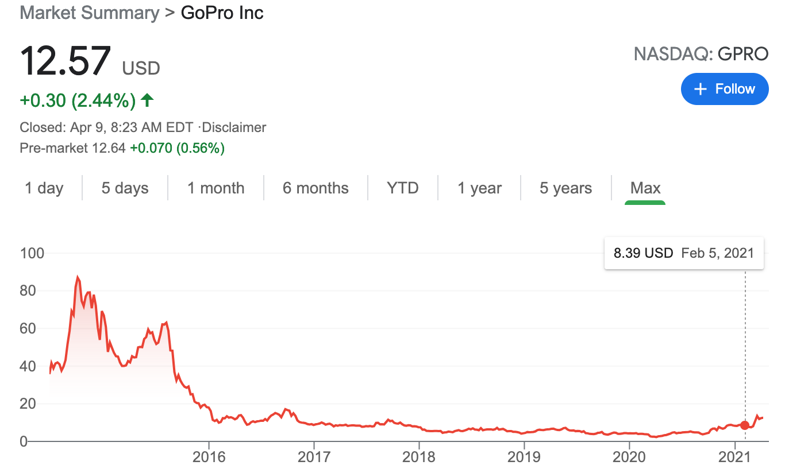

Building features no one uses is the cardinal sin of product work, and building features merely because users are asking for them is a well-known way of committing it. To keep us from falling into this trap, product leaders often quote Steve Jobs:
I think Henry Ford once said, “If I’d asked customers what they wanted, they would have told me, ‘A faster horse!'” People don’t know what they want until you show it to them.
The warning also crops up in various forms from people like Eric Reis, Marty Cagan, and Ben Horrowitz.
There’s wisdom here, but it’s also possible that building features users want is the right move, even if what they want is a suboptimal solution to their problem. Let’s call these sub-optimal features “faster-horse features.” Building faster-horse features can be a reasonable product strategy if scale allows you to build key protective barriers for your business and if building these features is the way to achieve that scale.
In the first section of this essay, I’ll detail what these protective barriers are and explain why shipping faster-horse features may be the best way to build them. Next, I’ll address the concern that building faster-horse features is not a user-centric or virtuous way of running a business.
Why build faster-horse features?
The justification for building faster-horse features follows from a few simple premises. The first is that you’re interested in building a business that has long-term, healthy margins. The second is that you believe that economies of scale, network effects, or switching costs constitute the main ways by which your business can achieve this.
If you’ve read The 7 Powers — a book on strategy by Stanford economist, business professor, and equity investor Hamilton Helmer — these premises will be familiar, but for everyone else, let’s state them with a little more detail.
To shed more light on the first premise, let’s quickly compare two types of businesses. First, let’s consider low-margin, commodity businesses.
Many restaurants fit this category. Restaurateurs often hope that they can create a unique offering, but often they wind up with something that is just one among many places we can go to eat. The competition between many restaurants will drive their margins to be close to zero.
Contrast this with a company like Facebook. Facebook is one of the most profitable companies by # of employees ever, and even extremely well-funded competitive offerings like Google+ were unable to put a dent into those margins.
Technology startups aspire to be like Facebook and not like restaurants, but the use of technology doesn’t guarantee long-term healthy margins. Go-Pro’s stock price is a nice reflection of this:

Technology powering startups in the long-term often becomes as exciting as the tech in a toaster and the margins will eventually reflect this.1
This brings us to the second premise that economies of scale, network effects, and switching costs are often the main mechanisms that protect margin’s long-term. It’s well-understood, for example, that network effects are what saved Facebook from Google+. Economies of scale, among other things, long protected Intel from competition from AMD. High switching costs protect SAP from competition even though their product is almost universally disliked.
With these two premises stated more clearly, we can now say why building faster-horse features can be a reasonable product strategy. Economies of scale, network effects, and switching costs only matter after you’ve acquired a lot of customers. In some cases, if you don’t have the features people are asking for, they’ll choose to use your competitor’s offering instead, even if those features don’t wind up solving their problem optimally. If you cede market share to your competitors at this point, you’re losing out on some of the main ways you can protect your margins long-term.
If you don’t believe that customers want things they don’t use, consider the microwave:
Eric Reis pointed out in The Startup Way that microwave manufactures spend a lot of money building buttons that no one uses. In another post, I wondered how this sort of obvious product flaw could happen and why it would take a consultant as expensive as Reis to point out that doing this is a bad idea.
Economies of scale et. al. and customer perceptions of needed features provides the answer: back when microwave manufacturers were racing against each other for relative scale, they couldn’t afford to lose out on a customer simply because they thought they’d use that potato button on that other microwave.
The decision to build these buttons was actually rational at the time. A time-traveling PM jazzed up on Reis or Cagan or Horrowitz who fought the business on building a potato button in the 70s as microwaves were taking off would be making a mistake. PMs are making a similar mistake today when they fight against features users need to make a purchase in businesses where economies of scale et. al will be the deciding factor in the business’ long-term success. I’ve definitely made this mistake as a PM.
Is building faster-horse features user-centric?
Setting aside business strategy for a second: as a builder, building features we know users won’t use or features we know won’t solve their problem optimally feels bad. It doesn’t feel user-centric. It may even feel downright sleezy. It can be, but it doesn’t have to be.
If building faster-horse features allows your business to achieve scale, you can offer your product for cheaper (economies of scale) and in some cases, you can make your product more valuable (network effects). These things clearly benefit the user, and in many cases, they’re going to be more beneficial than the feature you could have built if you didn’t “waste time” building a faster-horse feature like a potato button.
This argument is less compelling if scale is primarily a means to leveraging high switching costs to protect your business. Making it hard for your users to use a better product is hard to justify in terms of caring about the user’s needs, even if it’s justifiable from a business strategy perspective.
A Peter Thiel-esque way of shoring up this argument is to note that if high switching costs protect the businesses margins, this makes it possible for the business to act altruistically in other ways. Businesses that have zero margins can’t afford to be user-centric at all. They’re just fighting to survive.2
I don’t buy it. The fact that high switching costs is one of the main ways of securing high-margins long-term feels mostly like a perverse incentive to build bad products. I’m not judging you if you employ this strategy because I can imagine employing it myself, but we should be honest about the sleeziness of it.